后台项目相对复杂，为了有利于教学，我们不再从0搭建项目，而是直接使用课前资料中给大家准备好的源码：
我们解压缩，放到工作目录中：
然后在Intellij idea中导入新的工程：
选中我们的工程：

这正是一个用vue-cli构建的webpack工程，是不是与昨天的一样：
你应该注意到，这里并没有node_modules文件夹，方便给大家下发，已经把依赖都删除了。不过package.json中依然定义了我们所需的一切依赖：

我们只需要打开终端，进入项目目录，输入：npm install命令，即可安装这些依赖。

大概需要几分钟。
如果安装过程出现以下问题：
建议删除node_modules目录，重新安装。
输入命令：npm run dev

发现默认的端口是9001。访问：http://localhost:9001
会自动进行跳转：
Vue虽然会帮我们进行视图的渲染，但样式还是由我们自己来完成。这显然不是我们的强项，因此后端开发人员一般都喜欢使用一些现成的UI组件，拿来即用，常见的例如：
然而这些UI组件的基因天生与Vue不合，因为他们更多的是利用DOM操作，借助于jQuery实现，而不是MVVM的思想。
而目前与Vue吻合的UI框架也非常的多，国内比较知名的如：
然而我们都不用，我们今天推荐的是一款国外的框架：Vuetify
官方网站：https://vuetifyjs.com/zh-Hans/

有中国的为什么还要用外国的？原因如下：
这是官网的说明：

缺陷：
基于官方网站的文档进行学习：

我们重点关注UI components即可，里面有大量的UI组件，我们要用的时候再查看，不用现在学习，先看下有什么：
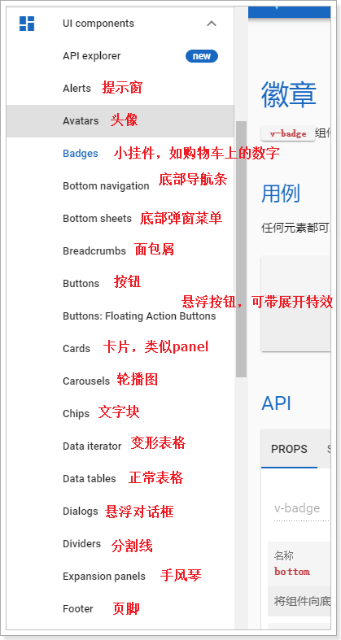

以后用到什么组件，就来查询即可。
开始编码前，我们先了解下项目的结构。
首先是目录结构图：
我们最主要理清index.html、main.js、App.vue之间的关系：

理一下：
div，其id为app。<vue-router><router-view>,我们之前讲过，vue-router路由后的组件将会在锚点展示。接下来我们一起看下页面布局。
Layout组件是我们的整个页面的布局组件：
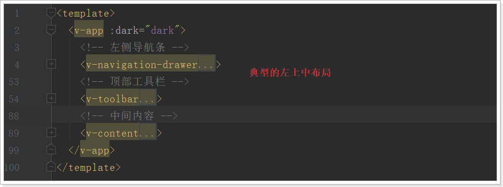
一个典型的三块布局。包含左，上，中三部分：

里面使用了Vuetify中的2个组件和一个布局元素：
v-navigation-drawer ：导航抽屉，主要用于容纳应用程序中的页面的导航链接。
v-toolbar ：工具栏通常是网站导航的主要途径。可以与导航抽屉一起很好地工作，动态选择是否打开导航抽屉，实现可伸缩的侧边栏。

v-content：并不是一个组件，而是标记页面布局的元素。可以根据您指定的app组件的结构动态调整大小，使得您可以创建高度可定制的组件。
那么问题来了：v-content中的内容来自哪里？

//的下面我们现在访问页面使用的是：http://localhost:9001
有没有什么问题？
实际开发中，会有不同的环境：
如果不同环境使用不同的ip去访问，可能会出现一些问题。为了保证所有环境的一致，我们会在各种环境下都使用域名来访问。
我们将使用以下域名：
但是最终，我们希望这些域名指向的还是我们本机的某个端口。
那么，当我们在浏览器输入一个域名时，浏览器是如何找到对应服务的ip和端口的呢？
一个域名一定会被解析为一个或多个ip。这一般会包含两步：
本地域名解析
浏览器会首先在本机的hosts文件中查找域名映射的IP地址，如果查找到就返回IP ，没找到则进行域名服务器解析，一般本地解析都会失败，因为默认这个文件是空的。
样式：
# My hosts
127.0.0.1 localhost
0.0.0.0 account.jetbrains.com
127.0.0.1 www.xmind.net域名服务器解析
本地解析失败，才会进行域名服务器解析，域名服务器就是网络中的一台计算机，里面记录了所有注册备案的域名和ip映射关系，一般只要域名是正确的，并且备案通过，一定能找到。
我们不可能去购买一个域名，因此我们可以伪造本地的hosts文件，实现对域名的解析。修改本地的host为：
127.0.0.1 api.leyou.com
127.0.0.1 manage.leyou.com这样就实现了域名的关系映射了。
每次在C盘寻找hosts文件并修改是非常麻烦的，给大家推荐一个快捷修改host的工具，在课前资料中可以找到：

解压，运行exe文件，效果：
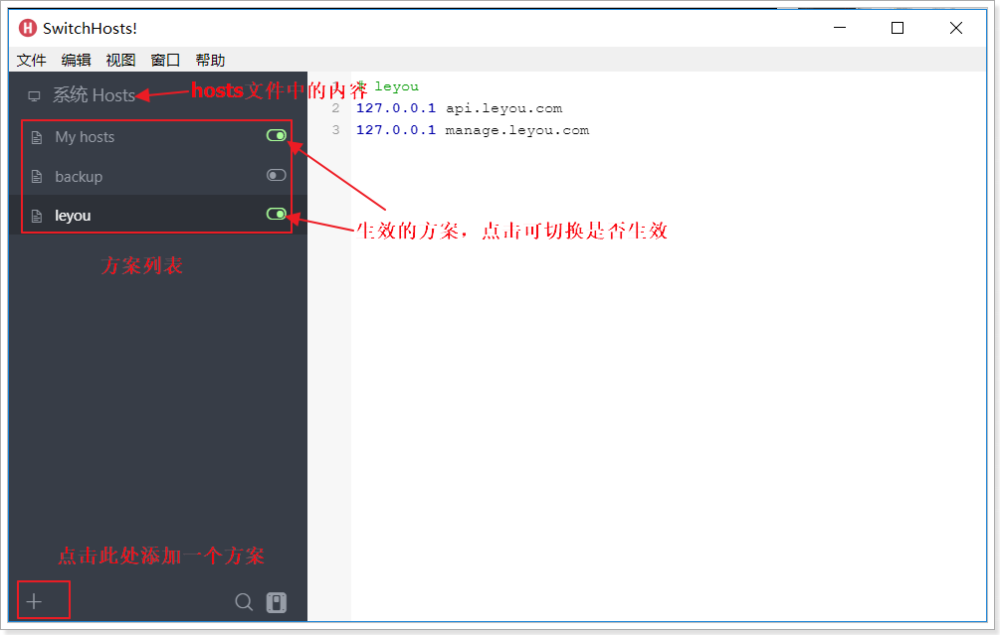
我们添加了两个映射关系（中间用空格隔开）：
现在，ping一下域名试试是否畅通：

OK！
通过域名访问：

原因：我们配置了项目访问的路径，虽然manage.leyou.com映射的ip也是127.0.0.1，但是webpack会验证host是否符合配置。

在webpack.dev.conf.js中取消host验证：

重新执行npm run dev，刷新浏览器：

OK！
域名问题解决了，但是现在要访问后台页面，还得自己加上端口：http://manage.taotao.com:9001。
这就不够优雅了。我们希望的是直接域名访问：http://manage.taotao.com。这种情况下端口默认是80，如何才能把请求转移到9001端口呢？
这里就要用到反向代理工具：Nginx

nginx可以作为web服务器，但更多的时候，我们把它作为网关，因为它具备网关必备的功能：
Web服务器分2类：
区分：web服务器不能解析jsp等页面，只能处理js、css、html等静态资源。 并发：web服务器的并发能力远高于web应用服务器。
什么是反向代理？
nginx可以当做反向代理服务器来使用：
利用反向代理，就可以解决我们前面所说的端口问题，如图
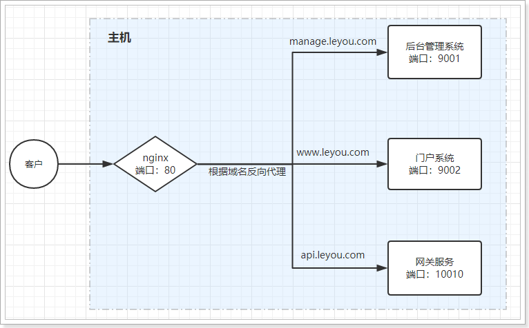
安装
安装非常简单，把课前资料提供的nginx直接解压即可，绿色免安装，舒服！

我们在本地安装一台nginx：
解压后，目录结构：
反向代理配置
示例：
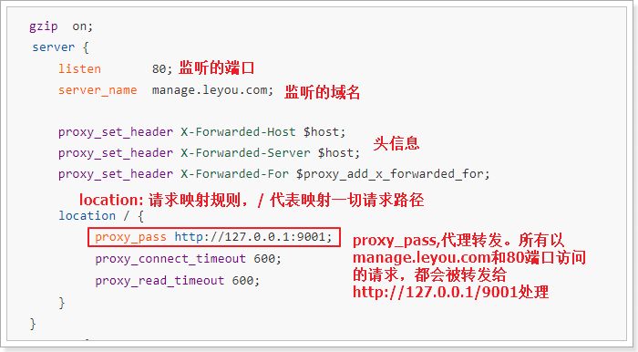
nginx中的每个server就是一个反向代理配置，可以有多个server
完整配置：
#user nobody;
worker_processes 1;
events {
worker_connections 1024;
}
http {
include mime.types;
default_type application/octet-stream;
sendfile on;
keepalive_timeout 65;
gzip on;
server {
listen 80;
server_name manage.leyou.com;
proxy_set_header X-Forwarded-Host $host;
proxy_set_header X-Forwarded-Server $host;
proxy_set_header X-Forwarded-For $proxy_add_x_forwarded_for;
location / {
proxy_pass http://127.0.0.1:9001;
proxy_connect_timeout 600;
proxy_read_timeout 600;
}
}
server {
listen 80;
server_name api.leyou.com;
proxy_set_header X-Forwarded-Host $host;
proxy_set_header X-Forwarded-Server $host;
proxy_set_header X-Forwarded-For $proxy_add_x_forwarded_for;
location / {
proxy_pass http://127.0.0.1:10010;
proxy_connect_timeout 600;
proxy_read_timeout 600;
}
}
}使用
nginx可以通过命令行来启动，操作命令：
start nginx.exenginx.exe -s stopnginx.exe -s reload启动过程会闪烁一下，启动成功后，任务管理器中会有两个nginx进程：
启动nginx，然后用域名访问后台管理系统：
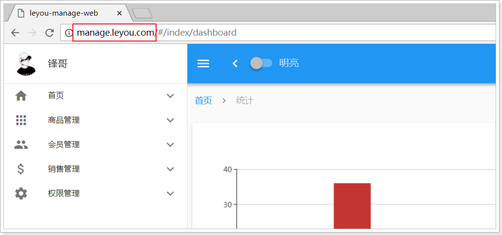
现在实现了域名访问网站了，中间的流程是怎样的呢？

浏览器准备发起请求，访问http://mamage.leyou.com，但需要进行域名解析
优先进行本地域名解析，因为我们修改了hosts，所以解析成功，得到地址：127.0.0.1
请求被发往解析得到的ip，并且默认使用80端口：http://127.0.0.1:80
本机的nginx一直监听80端口，因此捕获这个请求
nginx中配置了反向代理规则，将manage.leyou.com代理到127.0.0.1:9001，因此请求被转发
后台系统的webpack server监听的端口是9001，得到请求并处理，完成后将响应返回到nginx
nginx将得到的结果返回到浏览器
商城的核心自然是商品，而商品多了以后，肯定要进行分类，并且不同的商品会有不同的品牌信息，其关系如图所示：
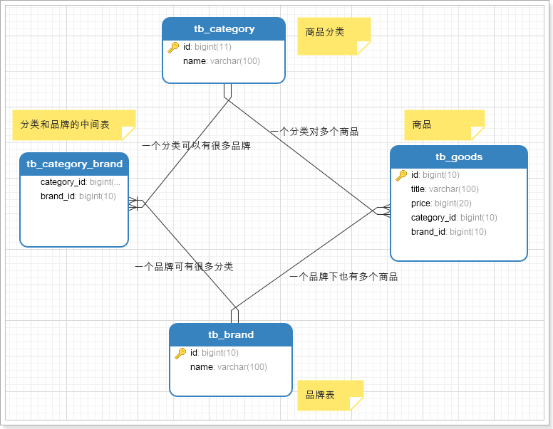
因此，我们需要依次去完成：商品分类、品牌、商品的开发。
首先导入课前资料提供的sql：

我们先看商品分类表：

CREATE TABLE `tb_category` (
`id` bigint(20) NOT NULL AUTO_INCREMENT COMMENT '类目id',
`name` varchar(20) NOT NULL COMMENT '类目名称',
`parent_id` bigint(20) NOT NULL COMMENT '父类目id,顶级类目填0',
`is_parent` tinyint(1) NOT NULL COMMENT '是否为父节点，0为否，1为是',
`sort` int(4) NOT NULL COMMENT '排序指数，越小越靠前',
PRIMARY KEY (`id`),
KEY `key_parent_id` (`parent_id`) USING BTREE
) ENGINE=InnoDB AUTO_INCREMENT=1424 DEFAULT CHARSET=utf8 COMMENT='商品类目表，类目和商品(spu)是一对多关系，类目与品牌是多对多关系';因为商品分类会有层级关系，因此这里我们加入了parent_id字段，对本表中的其它分类进行自关联。
首先我们看下要实现的效果：
商品分类之间是会有层级关系的，采用树结构去展示是最直观的方式。
一起来看页面，对应的是/pages/item/Category.vue：
页面模板：
<template>
<v-card>
<v-flex xs12 sm10>
<v-tree url="/item/category/list"
:treeData="treeData"
:isEdit="isEdit"
@handleAdd="handleAdd"
@handleEdit="handleEdit"
@handleDelete="handleDelete"
@handleClick="handleClick"
/>
</v-flex>
</v-card>
</template>v-card：卡片，是vuetify中提供的组件，提供一个悬浮效果的面板，一般用来展示一组数据。
v-flex：布局容器，用来控制响应式布局。与BootStrap的栅格系统类似，整个屏幕被分为12格。我们可以控制所占的格数来控制宽度：
本例中，我们用sm10控制在小屏幕及以上时，显示宽度为10格
v-tree：树组件。Vuetify并没有提供树组件，这个是我们自己编写的自定义组件：
里面涉及一些vue的高级用法，大家暂时不要关注其源码，会用即可。
也可参考课前资料中的：《自定义Vue组件的用法.md》
这里我贴出树组件的用法指南。
属性列表：
| 属性名称 | 说明 | 数据类型 | 默认值 | | :------- | :--------------- | :------ | :---- | | url | 用来加载数据的地址，即延迟加载 | String | - | | isEdit | 是否开启树的编辑功能 | boolean | false | | treeData | 整颗树数据，这样就不用远程加载了 | Array | - |
这里推荐使用url进行延迟加载，每当点击父节点时，就会发起请求，根据父节点id查询子节点信息。
当有treeData属性时，就不会触发url加载
远程请求返回的结果格式：
[
{
"id": 74,
"name": "手机",
"parentId": 0,
"isParent": true,
"sort": 2
},
{
"id": 75,
"name": "家用电器",
"parentId": 0,
"isParent": true,
"sort": 3
}
]事件：
| 事件名称 | 说明 | 回调参数 | | :----------- | :------------------------- | :--------------------------------- | | handleAdd | 新增节点时触发，isEdit为true时有效 | 新增节点node对象，包含属性：name、parentId和sort | | handleEdit | 当某个节点被编辑后触发，isEdit为true时有效 | 被编辑节点的id和name | | handleDelete | 当删除节点时触发，isEdit为true时有效 | 被删除节点的id | | handleClick | 点击某节点时触发 | 被点击节点的node对象,包含完整的node信息 |
完整node的信息
回调函数中返回完整的node节点会包含以下数据：
{
"id": 76, // 节点id
"name": "手机", // 节点名称
"parentId": 75, // 父节点id
"isParent": false, // 是否是父节点
"sort": 1, // 顺序
"path": ["手机", "手机通讯", "手机"] // 所有父节点的名称数组
}给大家的页面中，treeData是假数据，我们删除数据treeData属性，只保留url看看会发生什么：
<v-tree url="/item/category/list"
:isEdit="isEdit"
@handleAdd="handleAdd"
@handleEdit="handleEdit"
@handleDelete="handleDelete"
@handleClick="handleClick"
/>刷新页面，可以看到：

页面中的树没有了，并且发起了一条请求：http://localhost/api/item/category/list?pid=0
大家可能会觉得很奇怪，我们明明是使用的相对路径，讲道理发起的请求地址应该是：
http://manage.leyou.com/item/category/list
但实际却是：
http://localhost/api/item/category/list?pid=0
这是因为，我们有一个全局的配置文件，对所有的请求路径进行了约定：

路径是localhost，并且默认加上了/api的前缀，这恰好与我们的网关设置匹配，我们只需要把地址改成网关的地址即可,因为我们使用了nginx反向代理，这里可以写域名。
接下来，我们要做的事情就是编写后台接口，返回对应的数据即可。
在ly-item-interface中添加category实体类：
内容：
@Table(name="tb_category")
public class Category {
@Id
@GeneratedValue(strategy=GenerationType.IDENTITY)
private Long id;
private String name;
private Long parentId;
private Boolean isParent; // 注意isParent生成的getter和setter方法需要手动加上Is
private Integer sort;
// getter和setter略
}需要注意的是，这里要用到jpa的注解，因此我们在ly-item-iterface中添加jpa依赖
<dependency>
<groupId>javax.persistence</groupId>
<artifactId>persistence-api</artifactId>
<version>1.0</version>
</dependency>编写一个controller一般需要知道四个内容：
在刚才页面发起的请求中，我们就能得到绝大多数信息：

请求方式：Get
请求路径：/api/item/category/list。其中/api是网关前缀，/item是网关的路由映射，真实的路径应该是/category/list
请求参数：pid=0，根据tree组件的说明，应该是父节点的id，第一次查询为0，那就是查询一级类目
返回结果：？？
根据前面tree组件的用法我们知道，返回的应该是json数组：
[
{
"id": 74,
"name": "手机",
"parentId": 0,
"isParent": true,
"sort": 2
},
{
"id": 75,
"name": "家用电器",
"parentId": 0,
"isParent": true,
"sort": 3
}
]对应的java类型可以是List集合，里面的元素就是类目对象了。也就是List<Category>
添加Controller：

controller代码：
@Controller
@RequestMapping("category")
public class CategoryController {
@Autowired
private CategoryService categoryService;
/**
* 根据parentId查询类目
* @param pid
* @return
*/
@RequestMapping("list")
public ResponseEntity<List<Category>> queryCategoryListByParentId(@RequestParam(value = "pid", defaultValue = "0") Long pid) {
try {
if (pid == null || pid.longValue() < 0){
// pid为null或者小于等于0，响应400
return ResponseEntity.badRequest().build();
}
// 执行查询操作
List<Category> categoryList = this.categoryService.queryCategoryListByParentId(pid);
if (CollectionUtils.isEmpty(categoryList)){
// 返回结果集为空，响应404
return ResponseEntity.notFound().build();
}
// 响应200
return ResponseEntity.ok(categoryList);
} catch (Exception e) {
e.printStackTrace();
}
// 响应500
return ResponseEntity.status(HttpStatus.INTERNAL_SERVER_ERROR).build();
}
}一般service层我们会定义接口和实现类，不过这里我们就偷懒一下，直接写实现类了：

@Service
public class CategoryService {
@Autowired
private CategoryMapper categoryMapper;
/**
* 根据parentId查询子类目
* @param pid
* @return
*/
public List<Category> queryCategoryListByParentId(Long pid) {
Category record = new Category();
record.setParentId(pid);
return this.categoryMapper.select(record);
}
}我们使用通用mapper来简化开发：
public interface CategoryMapper extends Mapper<Category> {
}要注意，我们并没有在mapper接口上声明@Mapper注解，那么mybatis如何才能找到接口呢？
我们在启动类上添加一个扫描包功能：
@SpringBootApplication
@EnableDiscoveryClient
@MapperScan("com.leyou.item.mapper") // mapper接口的包扫描
public class LeyouItemServiceApplication {
public static void main(String[] args) {
SpringApplication.run(LeyouItemServiceApplication.class, args);
}
}我们不经过网关，直接访问：http://localhost:8081/category/list

然后试试网关是否畅通：http://api.leyou.com/api/item/category/list

一切OK！
然后刷新后台管理页面查看：
发现报错了！
浏览器直接访问没事，但是这里却报错，什么原因？
跨域：浏览器对于javascript的同源策略的限制 。
以下情况都属于跨域：
| 跨域原因说明 | 示例 |
| --------- | ------------------------------------- |
| 域名不同 | www.jd.com 与 www.taobao.com |
| 域名相同，端口不同 | www.jd.com:8080 与 www.jd.com:8081 |
| 二级域名不同 | item.jd.com 与 miaosha.jd.com |
如果域名和端口都相同，但是请求路径不同，不属于跨域，如：
www.jd.com/item
www.jd.com/goods
而我们刚才是从manage.leyou.com去访问api.leyou.com，这属于二级域名不同，跨域了。
跨域不一定会有跨域问题。
因为跨域问题是浏览器对于ajax请求的一种安全限制：一个页面发起的ajax请求，只能是与当前页域名相同的路径，这能有效的阻止跨站攻击。
因此：跨域问题 是针对ajax的一种限制。
但是这却给我们的开发带来了不便，而且在实际生产环境中，肯定会有很多台服务器之间交互，地址和端口都可能不同，怎么办？
目前比较常用的跨域解决方案有3种：
Jsonp
最早的解决方案，利用script标签可以跨域的原理实现。
限制：
nginx反向代理
思路是：利用nginx把跨域反向代理为不跨域，支持各种请求方式
缺点：需要在nginx进行额外配置，语义不清晰
CORS
规范化的跨域请求解决方案，安全可靠。
优势：
缺点：
我们这里会采用cors的跨域方案。
CORS是一个W3C标准，全称是"跨域资源共享"（Cross-origin resource sharing）。
它允许浏览器向跨源服务器，发出XMLHttpRequest请求，从而克服了AJAX只能同源使用的限制。
CORS需要浏览器和服务器同时支持。目前，所有浏览器都支持该功能，IE浏览器不能低于IE10。
浏览器端：
目前，所有浏览器都支持该功能（IE10以下不行）。整个CORS通信过程，都是浏览器自动完成，不需要用户参与。
服务端：
CORS通信与AJAX没有任何差别，因此你不需要改变以前的业务逻辑。只不过，浏览器会在请求中携带一些头信息，我们需要以此判断是否允许其跨域，然后在响应头中加入一些信息即可。这一般通过过滤器完成即可。
浏览器会将ajax请求分为两类，其处理方案略有差异：简单请求、特殊请求。
只要同时满足以下两大条件，就属于简单请求。：
（1) 请求方法是以下三种方法之一：
（2）HTTP的头信息不超出以下几种字段：
application/x-www-form-urlencoded、multipart/form-data、text/plain当浏览器发现发起的ajax请求是简单请求时，会在请求头中携带一个字段：Origin.
Origin中会指出当前请求属于哪个域（协议+域名+端口）。服务会根据这个值决定是否允许其跨域。
如果服务器允许跨域，需要在返回的响应头中携带下面信息：
Access-Control-Allow-Origin: http://manage.leyou.com
Access-Control-Allow-Credentials: true
Content-Type: text/html; charset=utf-8有关cookie：
要想操作cookie，需要满足3个条件：
不符合简单请求的条件，会被浏览器判定为特殊请求,，例如请求方式为PUT。
预检请求
特殊请求会在正式通信之前，增加一次HTTP查询请求，称为"预检"请求（preflight）。
浏览器先询问服务器，当前网页所在的域名是否在服务器的许可名单之中，以及可以使用哪些HTTP动词和头信息字段。只有得到肯定答复，浏览器才会发出正式的XMLHttpRequest请求，否则就报错。
一个“预检”请求的样板：
OPTIONS /cors HTTP/1.1
Origin: http://manage.leyou.com
Access-Control-Request-Method: PUT
Access-Control-Request-Headers: X-Custom-Header
Host: api.leyou.com
Accept-Language: en-US
Connection: keep-alive
User-Agent: Mozilla/5.0...与简单请求相比，除了Origin以外，多了两个头：
预检请求的响应
服务的收到预检请求，如果许可跨域，会发出响应：
HTTP/1.1 200 OK
Date: Mon, 01 Dec 2008 01:15:39 GMT
Server: Apache/2.0.61 (Unix)
Access-Control-Allow-Origin: http://manage.leyou.com
Access-Control-Allow-Credentials: true
Access-Control-Allow-Methods: GET, POST, PUT
Access-Control-Allow-Headers: X-Custom-Header
Access-Control-Max-Age: 1728000
Content-Type: text/html; charset=utf-8
Content-Encoding: gzip
Content-Length: 0
Keep-Alive: timeout=2, max=100
Connection: Keep-Alive
Content-Type: text/plain除了Access-Control-Allow-Origin和Access-Control-Allow-Credentials以外，这里又额外多出3个头：
如果浏览器得到上述响应，则认定为可以跨域，后续就跟简单请求的处理是一样的了。
虽然原理比较复杂，但是前面说过：
事实上，SpringMVC已经帮我们写好了CORS的跨域过滤器：CorsFilter ,内部已经实现了刚才所讲的判定逻辑，我们直接用就好了。
在leyou-gateway中编写一个配置类，并且注册CorsFilter：
import org.springframework.context.annotation.Bean;
import org.springframework.context.annotation.Configuration;
import org.springframework.web.cors.CorsConfiguration;
import org.springframework.web.cors.UrlBasedCorsConfigurationSource;
import org.springframework.web.filter.CorsFilter;
@Configuration
public class GlobalCorsConfig {
@Bean
public CorsFilter corsFilter() {
//1.添加CORS配置信息
CorsConfiguration config = new CorsConfiguration();
//1) 允许的域,不要写*，否则cookie就无法使用了
config.addAllowedOrigin("http://manage.leyou.com");
//2) 是否发送Cookie信息
config.setAllowCredentials(true);
//3) 允许的请求方式
config.addAllowedMethod("OPTIONS");
config.addAllowedMethod("HEAD");
config.addAllowedMethod("GET");
config.addAllowedMethod("PUT");
config.addAllowedMethod("POST");
config.addAllowedMethod("DELETE");
config.addAllowedMethod("PATCH");
// 4）允许的头信息
config.addAllowedHeader("*");
//2.添加映射路径，我们拦截一切请求
UrlBasedCorsConfigurationSource configSource = new UrlBasedCorsConfigurationSource();
configSource.registerCorsConfiguration("/**", config);
//3.返回新的CorsFilter.
return new CorsFilter(configSource);
}
}结构：

重启测试，访问正常：

分类的增删改功能暂时就不做了，页面已经预留好了事件接口，有兴趣的同学可以完成一下。
商品分类完成以后，自然轮到了品牌功能了。
先看看我们要实现的效果：

接下来，我们从0开始，实现下从前端到后端的完整开发。
为了方便看到效果，我们新建一个MyBrand.vue（注意先停掉服务器），从0开始搭建。
内容初始化一下：
<template>
<span>
hello
</span>
</template>
<script>
export default {
name: "myBrand"
}
</script>
<!-- scoped:当前样式只作用于当前组件的节点 -->
<style scoped>
</style>改变router新的index.js，将路由地址指向MyBrand.vue
打开服务器，再次查看页面：
干干净净了。只剩hello
大家看到这个原型页面肯定能看出，其主体就是一个table。我们去Vuetify查看有关table的文档：
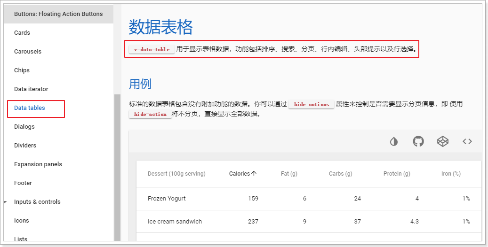
仔细阅读，发现v-data-table中有以下核心属性：
dark：是否使用黑暗色彩主题，默认是false
expand：表格的行是否可以展开，默认是false
headers：定义表头的数组，数组的每个元素就是一个表头信息对象，结构：
{
text: string, // 表头的显示文本
value: string, // 表头对应的每行数据的key
align: 'left' | 'center' | 'right', // 位置
sortable: boolean, // 是否可排序
class: string[] | string,// 样式
width: string,// 宽度
}items：表格的数据的数组，数组的每个元素是一行数据的对象，对象的key要与表头的value一致
loading：是否显示加载数据的进度条，默认是false
no-data-text：当没有查询到数据时显示的提示信息，string类型，无默认值
pagination.sync：包含分页和排序信息的对象，将其与vue实例中的属性关联，表格的分页或排序按钮被触发时，会自动将最新的分页和排序信息更新。对象结构：
{
page: 1, // 当前页
rowsPerPage: 5, // 每页大小
sortBy: '', // 排序字段
descending:false, // 是否降序
}total-items：分页的总条数信息，number类型，无默认值
select-all ：是否显示每一行的复选框，Boolean类型，无默认值
value：当表格可选的时候，返回选中的行
我们向下翻，找找有没有看起来牛逼的案例。
找到这样一条：
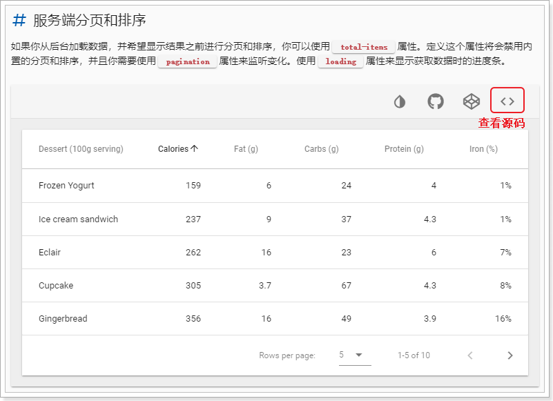
其它的案例都是由Vuetify帮我们对查询到的当前页数据进行排序和分页，这显然不是我们想要的。我们希望能在服务端完成对整体品牌数据的排序和分页，而这个案例恰好合适。
点击按钮，我们直接查看源码，然后直接复制到MyBrand.vue中
模板：
<template>
<div>
<v-data-table
:headers="headers"
:items="desserts"
:pagination.sync="pagination"
:total-items="totalDesserts"
:loading="loading"
class="elevation-1"
>
<template slot="items" slot-scope="props">
<td>{{ props.item.name }}</td>
<td class="text-xs-right">{{ props.item.calories }}</td>
<td class="text-xs-right">{{ props.item.fat }}</td>
<td class="text-xs-right">{{ props.item.carbs }}</td>
<td class="text-xs-right">{{ props.item.protein }}</td>
<td class="text-xs-right">{{ props.item.iron }}</td>
</template>
</v-data-table>
</div>
</template>接下来，就分析一下案例中每一部分是什么意思，搞清楚了，我们也可以自己玩了。
先看模板中table上的一些属性：
<v-data-table
:headers="headers"
:items="desserts"
:pagination.sync="pagination"
:total-items="totalDesserts"
:loading="loading"
class="elevation-1"
>
</v-data-table>headers：表头信息，是一个数组
items：要在表格中展示的数据，数组结构，每一个元素是一行。在这里应该是品牌集合
pagination.sync：分页信息，包含了当前页，每页大小，排序字段，排序方式等。加上.sync代表服务端排序，当用户点击分页条时，该对象的值会跟着变化。监控这个值，并在这个值变化时去服务端查询，即可实现页面数据动态加载了。
total-items：总条数，在这里是品牌的总记录数
loading：boolean类型，true：代表数据正在加载，会有进度条。false：数据加载完毕。

另外，在v-data-tables中，我们还看到另一段代码：
<template slot="items" slot-scope="props">
<td>{{ props.item.name }}</td>
<td class="text-xs-right">{{ props.item.calories }}</td>
<td class="text-xs-right">{{ props.item.fat }}</td>
<td class="text-xs-right">{{ props.item.carbs }}</td>
<td class="text-xs-right">{{ props.item.protein }}</td>
<td class="text-xs-right">{{ props.item.iron }}</td>
</template>这段就是在渲染每一行的数据。Vue会自动遍历上面传递的items属性，并把得到的对象传递给这段template中的props.item属性。我们从中得到数据，渲染在页面即可。
我们需要做的事情，主要有两件：
表格中具体有哪些列呢？参照品牌表：
品牌中有id,name,image,letter字段。
<template>
<div>
<v-data-table
:headers="headers"
:items="brands"
:pagination.sync="pagination"
:total-items="totalBrands"
:loading="loading"
class="elevation-1"
>
<template slot="items" slot-scope="props">
<td class="text-xs-center">{{ props.item.id }}</td>
<td class="text-xs-center">{{ props.item.name }}</td>
<td class="text-xs-center"><img v-if="props.item.image" :src="props.item.image" width="130" height="40"/></td>
<td class="text-xs-center">{{ props.item.letter }}</td>
</template>
</v-data-table>
</div>
</template>我们修改了以下部分：
img标签的src属性中，并且做了非空判断接下来编写要用到的数据：
data () {
return {
totalBrands: 0, // 总条数
brands: [], // 当前页品牌数据
loading: true, // 是否在加载中
pagination: {}, // 分页信息
headers: [ // 头信息
{text: 'id', align: 'center', value: 'id'},
{text: '名称', align: 'center', value: 'name', sortable: false},
{text: 'LOGO', align: 'center', value: 'image', sortable: false},
{text: '首字母', align: 'center', value: 'letter'},
]
}
}接下来就是对brands和totalBrands完成赋值动作了。
我们编写一个函数来完成赋值，提高复用性：
methods: {
getDataFromServer(){ // 从服务端加载数据的函数
// 伪造演示数据
const brands = [
{
"id": 2032,
"name": "OPPO",
"image": "http://img10.360buyimg.com/popshop/jfs/t2119/133/2264148064/4303/b8ab3755/56b2f385N8e4eb051.jpg",
"letter": "O",
"categories": null
},
{
"id": 2033,
"name": "飞利浦（PHILIPS）",
"image": "http://img12.360buyimg.com/popshop/jfs/t18361/122/1318410299/1870/36fe70c9/5ac43a4dNa44a0ce0.jpg",
"letter": "F",
"categories": null
},
{
"id": 2034,
"name": "华为（HUAWEI）",
"image": "http://img10.360buyimg.com/popshop/jfs/t5662/36/8888655583/7806/1c629c01/598033b4Nd6055897.jpg",
"letter": "H",
"categories": null
},
{
"id": 2036,
"name": "酷派（Coolpad）",
"image": "http://img10.360buyimg.com/popshop/jfs/t2521/347/883897149/3732/91c917ec/5670cf96Ncffa2ae6.jpg",
"letter": "K",
"categories": null
},
{
"id": 2037,
"name": "魅族（MEIZU）",
"image": "http://img13.360buyimg.com/popshop/jfs/t3511/131/31887105/4943/48f83fa9/57fdf4b8N6e95624d.jpg",
"letter": "M",
"categories": null
}
];
// 延迟一段时间，模拟数据请求时间
setTimeout(()=>{
this.brands = brands; // 赋值给品牌数组
this.totalBrands = brands.length; // 赋值数据总条数
this.loading = false; // 数据加载完成
}, 1000);
}
}然后使用钩子函数，在Vue实例初始化完毕后调用这个方法，这里使用mounted（渲染后）函数：
// 渲染后执行
mounted(){
this.getDataFromServer() // 调用数据初始化函数
}<template>
<div>
<v-data-table
:headers="headers"
:items="brands"
:pagination.sync="pagination"
:total-items="totalBrands"
:loading="loading"
class="elevation-1"
>
<template slot="items" slot-scope="props">
<td class="text-xs-center">{{ props.item.id }}</td>
<td class="text-xs-center">{{ props.item.name }}</td>
<td class="text-xs-center"><img v-if="props.item.image" :src="props.item.image" width="130" height="40"/></td>
<td class="text-xs-center">{{ props.item.letter }}</td>
</template>
</v-data-table>
</div>
</template>
<script>
export default {
name: "myBrand",
data () {
return {
totalBrands: 0, // 总条数
brands: [], // 当前页品牌数据
loading: true, // 是否在加载中
pagination: {}, // 分页信息
headers: [ // 头信息
{text: 'id', align: 'center', value: 'id'},
{text: '名称', align: 'center', value: 'name', sortable: false},
{text: 'LOGO', align: 'center', value: 'image', sortable: false},
{text: '首字母', align: 'center', value: 'letter'},
]
}
},
methods: {
getDataFromServer(){ // 从服务端加载数据的函数
// 伪造演示数据
const brands = [
{
"id": 2032,
"name": "OPPO",
"image": "http://img10.360buyimg.com/popshop/jfs/t2119/133/2264148064/4303/b8ab3755/56b2f385N8e4eb051.jpg",
"letter": "O",
"categories": null
},
{
"id": 2033,
"name": "飞利浦（PHILIPS）",
"image": "http://img12.360buyimg.com/popshop/jfs/t18361/122/1318410299/1870/36fe70c9/5ac43a4dNa44a0ce0.jpg",
"letter": "F",
"categories": null
},
{
"id": 2034,
"name": "华为（HUAWEI）",
"image": "http://img10.360buyimg.com/popshop/jfs/t5662/36/8888655583/7806/1c629c01/598033b4Nd6055897.jpg",
"letter": "H",
"categories": null
},
{
"id": 2036,
"name": "酷派（Coolpad）",
"image": "http://img10.360buyimg.com/popshop/jfs/t2521/347/883897149/3732/91c917ec/5670cf96Ncffa2ae6.jpg",
"letter": "K",
"categories": null
},
{
"id": 2037,
"name": "魅族（MEIZU）",
"image": "http://img13.360buyimg.com/popshop/jfs/t3511/131/31887105/4943/48f83fa9/57fdf4b8N6e95624d.jpg",
"letter": "M",
"categories": null
}
];
// 延迟一段时间，模拟数据请求时间
setTimeout(()=>{
this.brands = brands; // 赋值给品牌数组
this.totalBrands = brands.length; // 赋值数据总条数
this.loading = false; // 数据加载完成
}, 1000);
}
},
// 渲染后执行
mounted(){
this.getDataFromServer() // 调用数据初始化函数
}
}
</script>
<!-- scoped:当前样式只作用于当前组件的节点 -->
<style scoped>
</style>刷新页面查看：

我们将来要对品牌进行增删改，需要给每一行数据添加 修改删除的按钮，一般放到改行的最后一列。
其实就是多了一列，只是这一列没有数据，而是两个按钮而已。可以在官方文档中找一个带有操作按钮的表格，作为参考。
我们先在头（headers）中添加一列：
headers: [ // 头信息
{text: 'id', align: 'center', value: 'id'},
{text: '名称', align: 'center', value: 'name', sortable: false},
{text: 'LOGO', align: 'center', value: 'image', sortable: false},
{text: '首字母', align: 'center', value: 'letter'},
{text: '操作', align: 'center', value: 'id', sortable: false }
]然后在模板中添加按钮：
<template slot="items" slot-scope="props">
<td class="text-xs-center">{{ props.item.id }}</td>
<td class="text-xs-center">{{ props.item.name }}</td>
<td class="text-xs-center"><img v-if="props.item.image" :src="props.item.image" width="130" height="40"/></td>
<td class="text-xs-center">{{ props.item.letter }}</td>
<td class="text-xs-center">
<v-icon small class="mr-2" @click="editItem(props.item)">
edit
</v-icon>
<v-icon small @click="deleteItem(props.item)">
delete
</v-icon>
</td>
</template>效果：
在官方文档中找到按钮的用法：
因为新增跟某个品牌无关，是独立的，因此我们可以放到表格的外面。
效果：
为了不让按钮显得过于孤立，我们可以将按新增按钮和表格放到一张卡片（card）中。
我们去官网查看卡片的用法：
卡片v-card包含四个基本组件：
我们可以把新增的按钮放到v-card-title位置，把table放到下面，这样就成一个上下关系。
<template>
<v-card>
<v-card-title flat color="white">
<v-btn color="primary">新增</v-btn>
</v-card-title>
<v-data-table
:headers="headers"
:items="brands"
:pagination.sync="pagination"
:total-items="totalBrands"
:loading="loading"
class="elevation-1"
>
<template slot="items" slot-scope="props">
<td class="text-xs-center">{{ props.item.id }}</td>
<td class="text-xs-center">{{ props.item.name }}</td>
<td class="text-xs-center"><img v-if="props.item.image" :src="props.item.image" width="130" height="40"/></td>
<td class="text-xs-center">{{ props.item.letter }}</td>
<td class="text-xs-center">
<v-icon small class="mr-2" @click="editItem(props.item)">
edit
</v-icon>
<v-icon small @click="deleteItem(props.item)">
delete
</v-icon>
</td>
</template>
</v-data-table>
</v-card>
</template>效果：
我们还可以在卡片头部添加一个搜索框，其实就是一个文本输入框。
查看官网中，文本框的用法：
修改模板，添加输入框：
<v-card-title>
<v-btn color="primary">新增品牌</v-btn>
<!--搜索框，与search属性关联-->
<v-text-field label="输入关键字搜索" v-model="search"/>
</v-card-title>注意：要在数据模型中，添加search字段：
data() {
return {
totalBrands: 0, // 总条数
brands: [], // 当前页品牌数据
search: "", // 查询关键字
loading: true, // 是否在加载中
pagination: {}, // 分页信息
headers: [ // 头信息
{text: 'id', align: 'center', value: 'id'},
{text: '名称', align: 'center', value: 'name', sortable: false},
{text: 'LOGO', align: 'center', value: 'image', sortable: false},
{text: '首字母', align: 'center', value: 'letter'},
{text: '操作', align: 'center', value: 'id', sortable: false}
]
}
}效果：
发现输入框超级长！！！
这个时候，我们可以使用Vuetify提供的一个空间隔离工具：
修改代码：
<v-card-title>
<v-btn color="primary">新增品牌</v-btn>
<!--空间隔离组件-->
<v-spacer />
<!--搜索框，与search属性关联-->
<v-text-field label="输入关键字搜索" v-model="search"/>
</v-card-title>
查看textfiled的文档，发现：

通过append-icon属性可以为 输入框添加后置图标，所有可用图标名称可以到 material-icons官网去查看。
修改我们的代码：
<v-text-field label="输入关键字搜索" v-model="search" append-icon="search"/>
搜索框看起来高度比较高，页面不够紧凑。这其实是因为默认在文本框下面预留有错误提示空间。通过下面的属性可以取消提示：
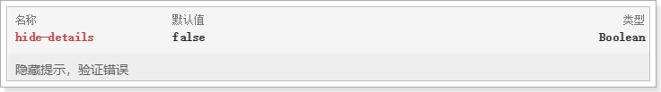
修改代码：
<v-text-field label="输入关键字搜索" v-model="search" append-icon="search" hide-details/>效果：
几乎已经达到了原来一样的效果了吧！
前台页面已经准备好，接下来就是后台提供数据接口了。
CREATE TABLE `tb_brand` (
`id` bigint(20) NOT NULL AUTO_INCREMENT COMMENT '品牌id',
`name` varchar(50) NOT NULL COMMENT '品牌名称',
`image` varchar(200) DEFAULT '' COMMENT '品牌图片地址',
`letter` char(1) DEFAULT '' COMMENT '品牌的首字母',
PRIMARY KEY (`id`)
) ENGINE=InnoDB AUTO_INCREMENT=325400 DEFAULT CHARSET=utf8 COMMENT='品牌表，一个品牌下有多个商品（spu），一对多关系';简单的四个字段，不多解释。
这里需要注意的是，品牌和商品分类之间是多对多关系。因此我们有一张中间表，来维护两者间关系：
CREATE TABLE `tb_category_brand` (
`category_id` bigint(20) NOT NULL COMMENT '商品类目id',
`brand_id` bigint(20) NOT NULL COMMENT '品牌id',
PRIMARY KEY (`category_id`,`brand_id`)
) ENGINE=InnoDB DEFAULT CHARSET=utf8 COMMENT='商品分类和品牌的中间表，两者是多对多关系';但是，你可能会发现，这张表中并没有设置外键约束，似乎与数据库的设计范式不符。为什么这么做？
在电商行业，性能是非常重要的。我们宁可在代码中通过逻辑来维护表关系，也不设置外键。

@Table(name = "tb_brand")
public class Brand {
@Id
@GeneratedValue(strategy = GenerationType.IDENTITY)
private Long id;
private String name;// 品牌名称
private String image;// 品牌图片
private Character letter;
// getter setter 略
}
通用mapper来简化开发：
public interface BrandMapper extends Mapper<Brand> {
}编写controller先思考四个问题，这次没有前端代码，需要我们自己来设定
这里我们封装一个类，来表示分页结果：
public class PageResult<T> {
private Long total;// 总条数
private Long totalPage;// 总页数
private List<T> items;// 当前页数据
public PageResult() {
}
public PageResult(Long total, List<T> items) {
this.total = total;
this.items = items;
}
public PageResult(Long total, Long totalPage, List<T> items) {
this.total = total;
this.totalPage = totalPage;
this.items = items;
}
public Long getTotal() {
return total;
}
public void setTotal(Long total) {
this.total = total;
}
public List<T> getItems() {
return items;
}
public void setItems(List<T> items) {
this.items = items;
}
public Long getTotalPage() {
return totalPage;
}
public void setTotalPage(Long totalPage) {
this.totalPage = totalPage;
}
}另外，这个PageResult以后可能在其它项目中也有需求，因此我们将其抽取到leyou-common中，提高复用性：

不要忘记在leyou-item-service工程的pom.xml中引入leyou-common的依赖：
<dependency>
<groupId>com.leyou.common</groupId>
<artifactId>leyou-common</artifactId>
<version>1.0.0-SNAPSHOT</version>
</dependency>接下来，我们编写Controller

@RestController
@RequestMapping("brand")
public class BrandController {
@Autowired
private BrandService brandService;
@GetMapping("page")
public ResponseEntity<PageResult<Brand>> queryBrandByPage(
@RequestParam(value = "page", defaultValue = "1") Integer page,
@RequestParam(value = "rows", defaultValue = "5") Integer rows,
@RequestParam(value = "sortBy", required = false) String sortBy,
@RequestParam(value = "desc", defaultValue = "false") Boolean desc,
@RequestParam(value = "key", required = false) String key) {
PageResult<Brand> result = this.brandService.queryBrandByPageAndSort(page,rows,sortBy,desc, key);
if (result == null || result.getItems().size() == 0) {
return new ResponseEntity<>(HttpStatus.NOT_FOUND);
}
return ResponseEntity.ok(result);
}
}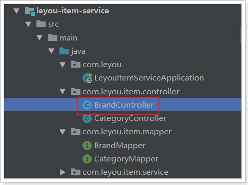
@Service
public class BrandService {
@Autowired
private BrandMapper brandMapper;
public PageResult<Brand> queryBrandByPageAndSort(
Integer page, Integer rows, String sortBy, Boolean desc, String key) {
// 开始分页
PageHelper.startPage(page, rows);
// 过滤
Example example = new Example(Brand.class);
if (StringUtils.isNotBlank(key)) {
example.createCriteria().andLike("name", "%" + key + "%")
.orEqualTo("letter", key);
}
if (StringUtils.isNotBlank(sortBy)) {
// 排序
String orderByClause = sortBy + (desc ? " DESC" : " ASC");
example.setOrderByClause(orderByClause);
}
// 查询
Page<Brand> pageInfo = (Page<Brand>) brandMapper.selectByExample(example);
// 返回结果
return new PageResult<>(pageInfo.getTotal(), pageInfo);
}
}通过浏览器访问试试：http://api.leyou.com/api/item/brand/page

接下来，去页面请求数据并渲染
异步查询数据，自然是通过ajax查询，大家首先想起的肯定是jQuery。但jQuery与MVVM的思想不吻合，而且ajax只是jQuery的一小部分。因此不可能为了发起ajax请求而去引用这么大的一个库。
Vue官方推荐的ajax请求框架叫做：axios，看下demo：

axios的Get请求语法：
axios.get("/item/category/list?pid=0") // 请求路径和请求参数拼接
.then(function(resp){
// 成功回调函数
})
.catch(function(){
// 失败回调函数
})
// 参数较多时，可以通过params来传递参数
axios.get("/item/category/list", {
params:{
pid:0
}
})
.then(function(resp){})// 成功时的回调
.catch(function(error){})// 失败时的回调axios的POST请求语法：
比如新增一个用户
axios.post("/user",{
name:"Jack",
age:21
})
.then(function(resp){})
.catch(function(error){})PUT和DELETE请求与POST请求类似
而在我们的项目中，已经引入了axios，并且进行了简单的封装，在src下的http.js中：

http.js中对axios进行了一些默认配置：
import Vue from 'vue'
import axios from 'axios'
import config from './config'
// config中定义的基础路径是：http://api.leyou.com/api
axios.defaults.baseURL = config.api; // 设置axios的基础请求路径
axios.defaults.timeout = 2000; // 设置axios的请求时间
Vue.prototype.$http = axios;// 将axios赋值给Vue原型的$http属性，这样所有vue实例都可使用该对象http.js中导入了config的配置，还记得吗？

http.js对axios进行了全局配置：baseURL=config.api，即http://api.leyou.com/api。因此以后所有用axios发起的请求，都会以这个地址作为前缀。
通过Vue.property.$http = axios，将axios赋值给了 Vue原型中的$http。这样以后所有的Vue实例都可以访问到$http，也就是访问到了axios了。
我们在组件MyBrand.vue的getDataFromServer方法，通过$http发起get请求，测试查询品牌的接口，看是否能获取到数据：
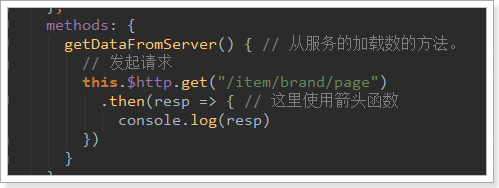
网络监视：

resp到底都有那些数据，查看控制台结果：
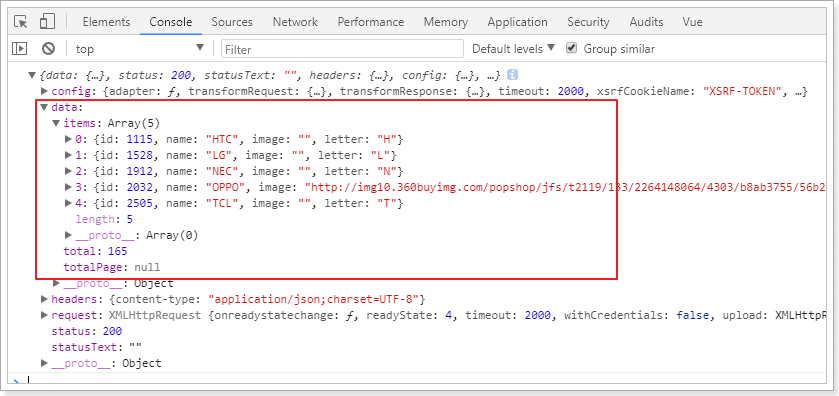
可以看到，在请求成功的返回结果response中，有一个data属性，里面就是真正的响应数据。
响应结果中与我们设计的一致，包含3个内容：
虽然已经通过ajax请求获取了品牌数据，但是刚才的请求没有携带任何参数，这样显然不对。我们后端接口需要5个参数：
而页面中分页信息应该是在pagination对象中，我们通过浏览器工具，查看pagination中有哪些属性：
分别是：
缺少一个搜索关键词，这个应该是通过v-model与输入框绑定的属性：search。这样，所有参数就都有了。
另外，不要忘了把查询的结果赋值给brands和totalBrands属性，Vuetify会帮我们渲染页面。
接下来，我们完善请求参数：
methods: {
getDataFromServer() { // 从服务端加载数据的函数
this.loading = true; // 加载数据
// 通过axios获取数据
this.$http.get("/item/brand/page", {
params: {
page: this.pagination.page, // 当前页
rows: this.pagination.rowsPerPage, // 每页条数
sortBy: this.pagination.sortBy, // 排序字段
desc: this.pagination.descending, // 是否降序
key: this.search // 查询字段
}
}).then(resp => { // 获取响应结果对象
this.totalBrands = resp.data.total; // 总条数
this.brands = resp.data.items; // 品牌数据
this.loading = false; // 加载完成
});
}
}查看网络请求：
效果：
现在我们实现了页面加载时的第一次查询，你会发现你点击分页或搜索不会发起新的请求，怎么办？
虽然点击分页，不会发起请求，但是通过浏览器工具查看，会发现pagination对象的属性一直在变化：

我们可以利用Vue的监视功能：watch，当pagination发生改变时，会调用我们的回调函数，我们在回调函数中进行数据的查询即可！
具体实现：

成功实现分页功能：
分页实现了，过滤也很好实现了。过滤字段对应的是search属性，我们只要监视这个属性即可:

查看网络请求：

页面结果：

<template>
<v-card>
<v-card-title flat color="white">
<v-btn color="primary">新增</v-btn>
<!--空间隔离组件-->
<v-spacer />
<!--搜索框，与search属性关联-->
<v-text-field label="输入关键字搜索" append-icon="search" v-model="search" hide-details/>
</v-card-title>
<v-data-table
:headers="headers"
:items="brands"
:pagination.sync="pagination"
:total-items="totalBrands"
:loading="loading"
class="elevation-1"
>
<template slot="items" slot-scope="props">
<td class="text-xs-center">{{ props.item.id }}</td>
<td class="text-xs-center">{{ props.item.name }}</td>
<td class="text-xs-center"><img v-if="props.item.image" :src="props.item.image" width="130" height="40"/></td>
<td class="text-xs-center">{{ props.item.letter }}</td>
<td class="text-xs-center">
<v-icon small class="mr-2" @click="editItem(props.item)">
edit
</v-icon>
<v-icon small @click="deleteItem(props.item)">
delete
</v-icon>
</td>
</template>
</v-data-table>
</v-card>
</template>
<script>
export default {
name: "myBrand",
data() {
return {
totalBrands: 0, // 总条数
brands: [], // 当前页品牌数据
search: "", // 查询关键字
loading: true, // 是否在加载中
pagination: {}, // 分页信息
headers: [ // 头信息
{text: 'id', align: 'center', value: 'id'},
{text: '名称', align: 'center', value: 'name', sortable: false},
{text: 'LOGO', align: 'center', value: 'image', sortable: false},
{text: '首字母', align: 'center', value: 'letter'},
{text: '操作', align: 'center', value: 'id', sortable: false}
]
}
},
watch: {
pagination:{
deep: true, // 深度监视
handler(){
this.getDataFromServer();
}
},
search(){
this.pagination.page = 1;
this.getDataFromServer();
}
},
methods: {
getDataFromServer() { // 从服务端加载数据的函数
this.loading = true; // 加载数据
// 通过axios获取数据
this.$http.get("/item/brand/page", {
params: {
page: this.pagination.page, // 当前页
rows: this.pagination.rowsPerPage, // 每页条数
sortBy: this.pagination.sortBy, // 排序字段
desc: this.pagination.descending, // 是否降序
key: this.search // 查询字段
}
}).then(resp => { // 获取响应结果对象
this.totalBrands = resp.data.total; // 总条数
this.brands = resp.data.items; // 品牌数据
this.loading = false; // 加载完成
});
}
},
// 渲染后执行
mounted() {
this.getDataFromServer() // 调用数据初始化函数
}
}
</script>
<!-- scoped:当前样式只作用于当前组件的节点 -->
<style scoped>
</style>大家下去可以尝试实现品牌的增删改功能 Edit By MaHua